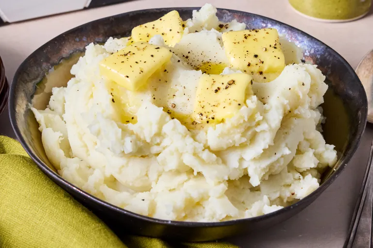

Mashed Potatoes

Description
The best mashed potatoes are smooth, creamy, and buttery. This is my favorite recipe, made
with russet potatoes, warm milk, and melted butter for light, fluffy results every time.
It's a classic side dish for the holidays or weeknight dinners!
A great bowl of mashed potatoes starts with the right potatoes and a few simple techniques.
Russets make these mashed potatoes light and fluffy, while warm milk and melted butter help
create a smooth, creamy texture without cooling them down. You can add garlic for extra
savory flavor, or keep them classic.
Ingredients
- 2 pounds russet potatoes, peeled and cut into 2-inch chunks
- 3 cloves garlic, peeled, or to taste (Optional)
- 1 cup milk
- 3 tablespoons butter
- salt and ground black pepper to taste
Steps
- Gather all ingredients.
- Bring a large pot of salted water to boil. Add potatoes and garlic, if using:
reduce the heat to medium and simmer until potateos are easily pierced with a
fork, about 15 minutes.
- When the potatoes are almost finished, heat milk and butter in a small saucepan
over low heat until butter is melted.
- Drain potatoes and garlic well; return to the hot pot for 1 to 2 minutes to remove
excess moisture. Gradually add the warm milk mixture while mashing until smooth
and creamy, using only as much as needed to reach your desired consistency.
- Season with salt and pepper. Serve topped with extra butter, if desired.
Home